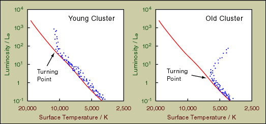
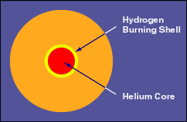
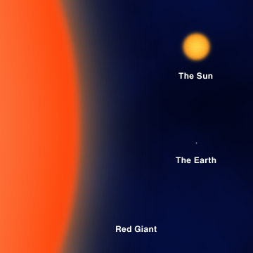
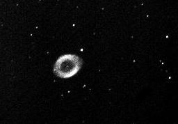
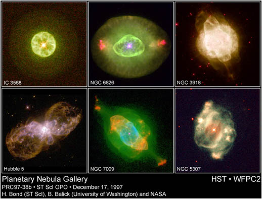
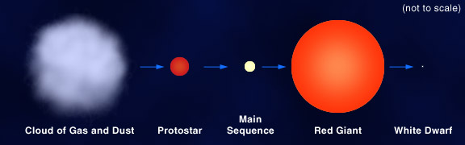
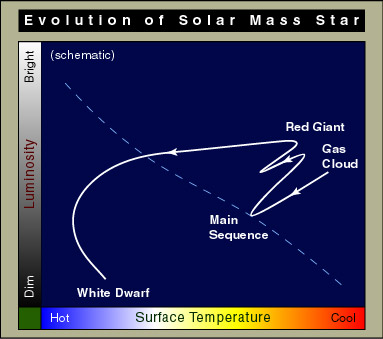
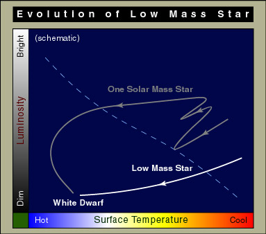
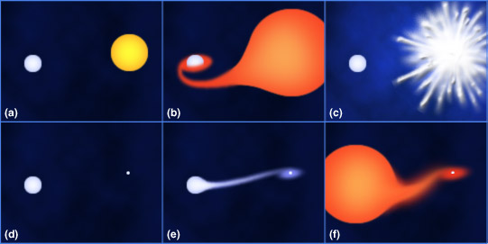

One way to see more massive stars have shorter lives is to study the star clusters. As mentioned in Chapter 13, stars in clusters were born at the same time. Hence, they have the same age, but their masses are different. We expect stars with short life span are already dead. When we plot the stars of a cluster in the H-R diagram, we see the more massive stars, which are stars in the upper left, have already evolved off the main sequence. And stars at the turnoff point are just about to die. From the two H-R diagrams below, we can also tell which cluster is older and which is younger.

Main sequence stars have stable luminosities and sizes. To be honest, they are quite "boring" compare to their deaths. We have already seen that how long a star lives depends exclusively on its mass. We will also see how important the mass of a star in determining its death. In this chapter, we are going to discuss the fate of a star with mass less than or about that of our Sun.

When our Sun becomes a red giant, its size can be as large as the Earth's orbit. The following figure shows the relative sizes of the Earth (the white dot), the Sun now and a typical red giant.

All red giants are variable stars. The core keeps on contracting and heating up until it is hot enough for the triple-alpha process (also known as helium flash) to take place. In this reaction, three helium nuclei will fuse together to form a carbon nucleus. Since the hydrogen-burning shell and helium-burning core do not produce energy in a stable and steady manner, the star will pulsate and generate strong stellar wind. Eventually, the entire outer shell will be ejected. The gas ejected will form a thin shell around the star. It is a planetary nebula. Here is the Ring nebula, M57, easily visible through a small telescope. Some others were taken by the Hubble Space Telescope.
 |
| Courtesy K.M. Lee. |
 |
| Courtesy STScI. |
For the core, it does not heat up sufficiently for carbon-burning. When there's no more nuclear burning, it shrinks. It grows fainter as well as hotter and becomes a white dwarf. Then, electron degenerate pressure stops it from further contracting. (An extremely simplified, but not totally correct, picture is that the electron degenerate pressure develops when the electrons are touching each others.) The electron degenerate pressure does not come from the burning of any nuclear fuel and can therefore support the star from further gravitational contraction forever.
A typical white dwarf is slightly smaller than the Earth, but with about the same mass as our Sun. Its density is about 300,000 times of a rock. After it has radiated away all its residue energy, it becomes a black dwarf. However, the time taken is much larger than the age of the universe. So, we believe there is no black dwarf yet. The following picture schematically summarizes the evolution of a solar mass star.

In the H-R diagram below, our Sun is now in the main sequence. Five billion years later, it will evolve along the curve to become a red giant. It will be unstable and eject the shell forming a planetary nebula, then move quickly along the curve to become white dwarf at the lower left.


